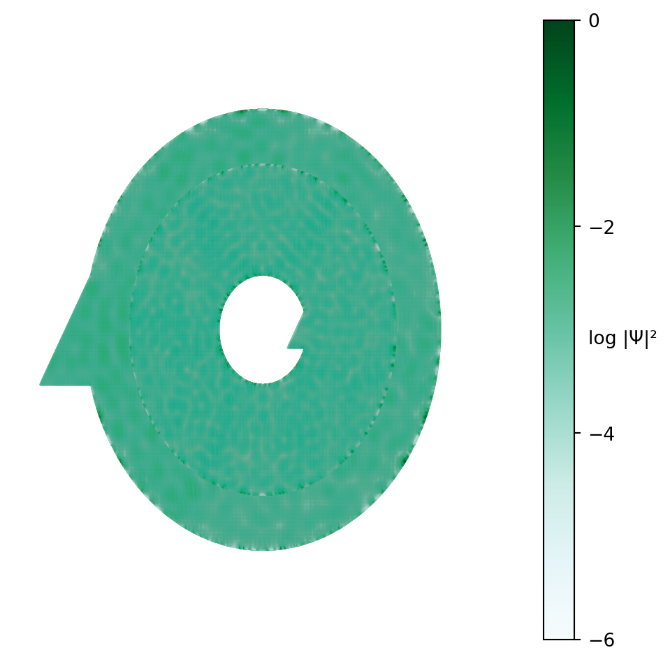

Code
from pylab import *
import kwant
import numpy as np
from matplotlib import pyplotSe construyó un nanosistema en forma de anillo. El sistema está hecho por una bicapa de grafeno en torno al círculo central y por una monocapa para en los bordes exteriores. Hay dos contactos: uno hecho con una monocapa de grafeno y conectada al exterior del anillo, otro hecho con una bicapa y conectado al interior. Sobre el sistema se aplica un campo magnético perpendicular. Para modelar este sistema se empleó la librería Kwant.
from pylab import *
import kwant
import numpy as np
from matplotlib import pyplotComo primer pasó, se determinó la geometría de la bicapa de grafeno. Para ello, se emplearon los siguientes vectores base \[\vec{a}_{1} = \hat{x}; \quad \vec{a}_{2} = \frac{1}{2}\hat{x} + \frac{\sqrt{3}}{2}\hat{y}; \quad \vec{a}_{3} = \hat{z}.\] Para esto, se asumió que el parámetro del cristal era igual a \(1\). En cada celta unitaria, los orbitales se encontraban en la siguientes posiciones \[\hat{s}_{1} = \frac{1}{2}\hat{x}+\frac{\sqrt{3}}{6}\hat{y};\quad \vec{s}_{2} = \hat{x}+\frac{\sqrt{3}}{3}\hat{y};\quad \vec{s}_{3}=\frac{1}{2}\hat{z};\quad \vec{s}_{4}=\hat{x}+\frac{\sqrt{3}}{3}\hat{y}+\frac{1}{2}\hat{z}.\] Usando estos vectores, se definió una red en kwant. Para definir la red de grafeno como parte de la monocapa, se usaron los mismos vectores de red y los orbitales \(\hat{s}_{1}\) y \(\hat{s}_{2}\).
a1 = np.array([1., 0.,0.])
a2 = np.array([0.5, sqrt(3)/2, 0])
a3 = np.array([0.,0.,1.])
bicapa = kwant.lattice.general([(a1),(a2),(a3)],
[(1/2, sqrt(3)/6, 0),
( 1, sqrt(3)/3, 0),
( 0, 0,0.5),
( 1, sqrt(3)/3,0.5)],norbs = 1)
a,b,c,d = bicapa.sublattices
grafeno = kwant.lattice.general([(a1),(a2),(a3)],
[(1/2, sqrt(3)/6, 0),
( 1, sqrt(3)/3, 0)],norbs = 1)
a1,b1 = grafeno.sublattices
lat = kwant.lattice.cubic(1) #Este mallado se definió de forma auxiliar para conectar el contacto interior. Luego, se definió el valor de los hoppings entre los distintos orbitales. Se usaron los valores \(\gamma_{0} = 3.16 \text{ eV}, \gamma_{1} = 0.381 \text{ eV}, \gamma_{3} = 0.38 \text{ eV}, \gamma_{4} = 0.14 \text{ eV} \text{ y } \delta_{1} = 0.022 \text{ eV}.\) Estos valores se obtuvieron del artículo de Edward McCann and Mikito Koshino. La disposición de los hoppings y la red se muestran debajo, tal y como se presenta en el artículo. Para los hoppings en las monocapas, únicamente se consideraron los enlaces entre elementos de una misma capa. Estos están dados por \(\gamma_{0}\)
Para el artículo revisar https://arxiv.org/abs/1205.6953
gamma0 = 3.16
gamma1 = 0.381
gamma3 = 0.38
gamma4 = 0.14
delta1 = 0.022Se colocaron los hoppings entre los respectivos orbitales. De la misma forma, se colocó el valor de los onsites: 0 para los orbitales 1 y 3; y \(\Delta_{1} = 0.022 \text{eV}\) para los orbitales 2 y 4. Luego, se construyó un nanosistema en forma de anillo con un radio interior de \(r = 10\) y un radio exterior de \(R = 40\).
r,R,Z = 80,320,1 #Considerar que la unidad de esto está en múltiplos de sqrt(3)(1.42A).
def ring(site):
(x,y,z) = site
rsq = x ** 2 + y ** 2
return(r**2 <= rsq < R**2) and (0 <= z < Z)
def onsite(site):
if site.family == a:
return 0
elif site.family == b:
return delta1
elif site.family == c:
return 0
elif site.family == d:
return delta1
syst = kwant.Builder()
syst[bicapa.shape(ring,(r,0,0))] = onsite
hoppings1 = (((0, 0, 0), a, b),
((1, 0, 0), a, b),
((0, 1, 0), a, b),
((1, 0, 0), c, d),
((0, 1, 0), c, d),
((1, 1, 0), c, d))
syst[[kwant.builder.HoppingKind(*hopping) for hopping in hoppings1]] = -1*gamma0
hoppings_2 = ((( 0, 0, 0), a, c),
((-1, 0, 0), a, c),
(( 0,-1, 0), a, c))
syst[[kwant.builder.HoppingKind(*hopping) for hopping in hoppings_2]] = -1*gamma3
hoppings_3 = (((0,0,0),b,d),)
syst[[kwant.builder.HoppingKind(*hopping) for hopping in hoppings_3]] = gamma1
hoppings_4 = (((0, 0, 0), a, d),
((1, 0, 0), a, d),
((0, 1, 0), a, d))
syst[[kwant.builder.HoppingKind(*hopping) for hopping in hoppings_4]] = gamma4 El sistema construido se muestra en la imagen debajo.
kwant.plot(syst,fig_size=(6,6));Posteriormente, se retiró la monocapa para una parte del anillo. Esto se hizo usando el comando delde Quarto. Para ello, primero se definió la sección donde se retiraría la capa superior. Esta constaba de la parte del anillo que iba de 3/4 del radio de este al borde del sistema.
def in_hole(site):
x, y, z = site.pos
radsqrt = x**2 + y**2
return 0.5 <= z < Z and (0.75*R)**2 <= radsqrt < R**2Se retiraron los sitios en la sección definida.
for site in filter(in_hole, list(syst.sites())):
del syst[site]
kwant.plot(syst,fig_size=(6,6));Una vez definidos los enlaces entre el sistema y su forma, se añadió un campo magnético \(\vec{\text{B}} = \text{B}\hat{z}\) al sistema. Para considerar el efecto del campo se aplicó la fase de Peierls a cada uno de los enlaces. Con dicho fin, se eligió la siguiente norma para el potencial magnético \[\vec{\text{A}} = -\text{B}y\hat{x}.\] Se eligió esta norma, pues esta seguía la simetría traslacional que fue posteriormente elegida en los contactos. Con esta elección, la fase de Peierls añadida es \[ \phi_{ij} = \frac{\text{q}}{\hbar}\int \vec{\text{A}} \cdot \text{d}\vec{l}.\]
Aquí, se considera que la curva sobre la que se integra es la recta que une dos puntos en el mayado. Es decir, \[\vec{l} = [(x_{1}-x_{0})\hat{x} + (y_{1}-y_{0})\hat{y} + (z_{1}-z_{0})\hat{z}]t + \vec{v}_{0}.\] Con esto en mente, se definió una función que añadía la fase calculada a cada sitio en el sistema.
\[\begin{aligned} \phi_{ij} & = - \frac{\text{q}\text{B}}{\hbar}\int y \hat{x} \cdot \text{d}\vec{l} \\ & = - - \frac{\text{q}\text{B}}{\hbar}\int y \hat{x} \cdot \frac{\text{d}\vec{l}}{\text{d}t}\text{d}t \\ & = - \frac{\text{q}\text{B}}{\hbar} (x_{1}-x_{0})\int_{0}^{1}\left[(y_{1}-y_{0})t + y_{0} \right]\text{d}t \\ & =-\frac{\text{q}\text{B}}{2\hbar}(x_{j}-x_{i})(y_{j}+y_{i}).\end{aligned}\] Se agregó esta fase a cada uno de los hoppings del nanosistema. De esta forma, los nuevos hoppings del sistema estaban dados por \[\gamma_{\text{nuevo}} = \gamma \exp(- \text{i} \frac{\text{q}\text{B}}{2\hbar}(x_{j}-x_{i})(y_{j}+y_{i}))\]
B = 0 # [T]
ħ = 1.0545718e-34 # [SI]
h = 2*pi*ħ # [SI]
e = 1.602176634e-19 # [SI]
ΦB = h/2/e # [SI]
z_B = 3*(0.142)*(0.142)*pi*B/ΦB/1e9/1e9
def PeierlsPhase(sitei, sitej):
xi, yi,zi = sitei.pos
xj, yj,zi = sitej.pos
phase_ji = -z_B*(xj-xi)*(yj+yi)/2
return exp(1j * phase_ji)Se aplicó esta fase a todos los sitios del anillo.
for (sit,sit1) in syst.hoppings():
syst[sit,sit1] = syst[sit,sit1]*PeierlsPhase(sit1, sit)Se añadieron contactos que se extendían a lo largo del eje x. El primer contacto tenía una reccoría el eje y de \(W = 10\) a \(-W\). Este se hizo con una monocapa y se conectó al exterior del anillo. El segundo contacto se hizo con una monocapa de grafeno. Este se hizo con un rango en el eje y de \(-r/3\) a \(r/3\). También se consideró el efecto del campo magnético sobre los contactos. La construcción de los contactos se realiza en la celda debajo.
W = r
def contacto(pos):
x,y,z = pos
return (-W <= y < W) and (0 <= z < Z)
def contacto2(pos):
x,y,z = pos
return (-r/3 <= y < r/3) and (0 <= z < Z)
hoppingsgraf = (((0, 0, 0), a1, b1),
((1, 0, 0), a1, b1),
((0, 1, 0), a1, b1))
def onsitegraf(site):
if site.family == a1:
return 0
else:
return delta1
# Contacto izquierdo
sym1 = kwant.TranslationalSymmetry(grafeno.vec((-1, 0,0)))
lead_izq = kwant.Builder(sym1)
lead_izq[grafeno.shape(contacto, (0,0,0))] = onsitegraf
lead_izq[[kwant.builder.HoppingKind(*hopping) for hopping in hoppingsgraf]] = -1*gamma0
for (sit,sit1) in lead_izq.hoppings():
lead_izq[sit,sit1] = lead_izq[sit,sit1]*PeierlsPhase(sit1, sit)
# Contacto derecho
sym2 = kwant.TranslationalSymmetry(bicapa.vec((-1, 0,0)))
lead_cen = kwant.Builder(sym2)
lead_cen[bicapa.shape(contacto2, (0, 0,0))] = onsite
lead_cen[[kwant.builder.HoppingKind(*hopping) for hopping in hoppings1]] = -1*gamma0
lead_cen[[kwant.builder.HoppingKind(*hopping) for hopping in hoppings_2]] = -1*gamma3
lead_cen[[kwant.builder.HoppingKind(*hopping) for hopping in hoppings_3]] = gamma1
lead_cen[[kwant.builder.HoppingKind(*hopping) for hopping in hoppings_4]] = gamma4
for (sit,sit1) in lead_cen.hoppings():
lead_cen[sit,sit1] = lead_cen[sit,sit1]*PeierlsPhase(sit1, sit)Se terminó de construir el sistema.
syst.attach_lead(lead_izq)
syst.attach_lead(lead_cen,lat(0,0,0))
syst = syst.finalized()kwant.plot(syst,fig_size=(18,18));Finalmente, se calculó la estructura de bandas de uno de los contactos para confirmar que todo lo planteado es correcto.
def EstructuraBandas(lead,momentos):
bandas = kwant.physics.Bands(lead)
eigen = [bandas(k) for k in momentos]
return momentos,eigennk = 201
momentos = linspace(0,2*pi,nk)
momentos,eigen = EstructuraBandas(syst.leads[0],momentos)
plot(momentos,eigen,'-k');%%time
"""def Conductancia(syst,energias):
datos = []
for energia in energias:
matrizS = kwant.smatrix(syst,energia)
datos.append(matrizS.transmission(0,1))
return energias,datos
energias = linspace(-1.0,1.0,1000)
energias,datos = Conductancia(syst,energias)
DATOS = column_stack((energias,datos))
savetxt('DatosB100ContInterno.txt',DATOS)"""CPU times: user 1e+03 ns, sys: 0 ns, total: 1e+03 ns
Wall time: 4.77 µs"def Conductancia(syst,energias):\n datos = []\n for energia in energias:\n matrizS = kwant.smatrix(syst,energia)\n datos.append(matrizS.transmission(0,1))\n return energias,datos\n\nenergias = linspace(-1.0,1.0,1000)\nenergias,datos = Conductancia(syst,energias)\n\nDATOS = column_stack((energias,datos))\nsavetxt('DatosB100ContInterno.txt',DATOS)"#plot(energias,datos,'o-')Sites = list(syst.sites)
posiciones=[]
for site in Sites:
# if site.pos[2]==2:
posiciones.append(site.pos)
posiciones=np.array(posiciones)
plt.scatter(posiciones.T[0], posiciones.T[1])<matplotlib.collections.PathCollection at 0x7fe6b27a0898>import plotly.graph_objects as go
"""fig = go.Figure(data=[go.Scatter3d(x=posiciones.T[0],
y=posiciones.T[1],
z=posiciones.T[2],
mode='markers',marker=dict(size=2))])
camera = dict(
eye=dict(x=0, y=2, z=0.1)
)
fig.update_layout( autosize=False,
width=600, height=400,
margin=dict(l=0, r=0, b=0, t=0),
scene_camera=camera,
font=dict(
size=16,
color="Black"),
scene = dict(xaxis = dict(
title = dict(text="x"),
tickmode = 'array',
tickvals = [-30,0,30],
ticktext = ['','0',''],
showbackground=True),
yaxis = dict(
title = dict(text="y"),
tickmode = 'array',
tickvals = [-30,0,30],
ticktext = ['','0',''],
showbackground=True),
zaxis = dict(
title = dict(text="z"),
tickmode = 'array',
tickvals = [-10,0,10],
ticktext = ['','0',''],
range=[-10,10],
showbackground=True)))
fig.show()"""'fig = go.Figure(data=[go.Scatter3d(x=posiciones.T[0],\n y=posiciones.T[1],\n z=posiciones.T[2],\n mode=\'markers\',marker=dict(size=2))])\ncamera = dict(\n eye=dict(x=0, y=2, z=0.1)\n)\nfig.update_layout( autosize=False,\n width=600, height=400,\n margin=dict(l=0, r=0, b=0, t=0),\n scene_camera=camera,\n font=dict(\n size=16,\n color="Black"),\n scene = dict(xaxis = dict(\n title = dict(text="x"),\n tickmode = \'array\',\n tickvals = [-30,0,30],\n ticktext = [\'\',\'0\',\'\'],\n showbackground=True),\n yaxis = dict(\n title = dict(text="y"),\n tickmode = \'array\',\n tickvals = [-30,0,30],\n ticktext = [\'\',\'0\',\'\'],\n showbackground=True),\n zaxis = dict(\n title = dict(text="z"),\n tickmode = \'array\',\n tickvals = [-10,0,10],\n ticktext = [\'\',\'0\',\'\'],\n range=[-10,10],\n showbackground=True)))\nfig.show()'wave = kwant.wave_function( syst,energy = 0.3 )
ndeg,nsites = shape(wave(0))
rho = kwant.operator.Density(syst)
ρ = zeros(nsites)
for n in range(ndeg):
psi = wave(0)[n]
ρ += rho(psi)
ρ /= max(ρ)
fig, ax = plt.subplots(figsize=(6,6))
filtro = posiciones.T[2]>-0.1
ax.scatter(posiciones.T[0],posiciones.T[1],s=0.001,c='#00AB8E',alpha=0.05,zorder=2)
disco = ax.scatter(posiciones.T[0][filtro],
posiciones.T[1][filtro],
s = 0.02,
c = log10(ρ[filtro]),
vmin=-6,vmax=0,
alpha = 1.0,
cmap = 'BuGn',zorder=1)
barracolor = fig.colorbar(disco)
barracolor.set_ticks([-6,-4,-2,0])
barracolor.set_label('log |Ψ|²',rotation=0)
ax.set_xlim(-450,450)
ax.set_ylim(-450,450)
ax.set_axis_off()